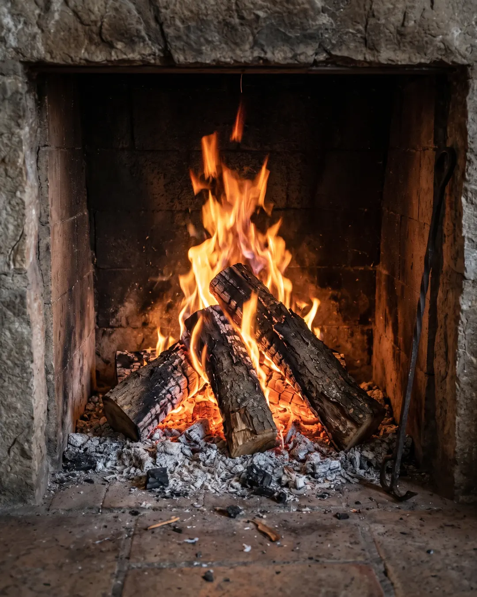
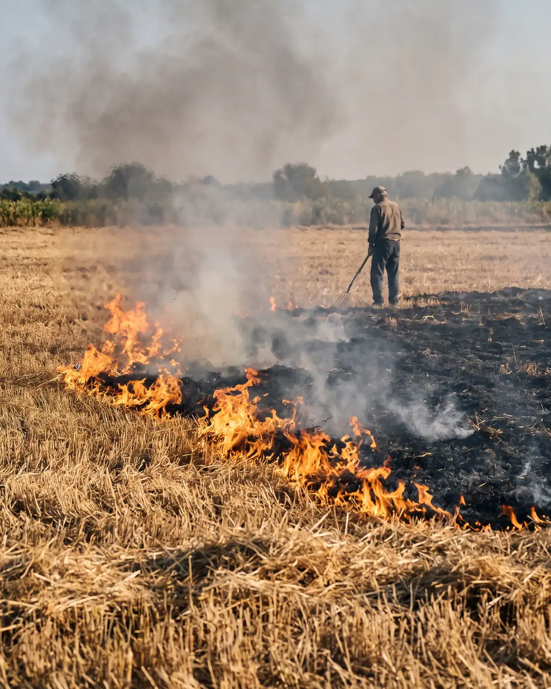

Caso n.º 17 · Fuego
Sobre este caso
El caso n.º 17 está cerrado. Fue el caso diario del 17 de noviembre de 2026 y su tema fue Fuego. Los detectives de aquel día tuvieron dos retos: cinco imágenes que clasificar en fotografías reales y generadas por IA, y cinco afirmaciones de una frase que clasificar en datos y bulos.
- Imágenes generadas por IA: 3 de 5
- Bulos: 2 de 5
Aquí tienes todas las respuestas. Cada imagen generada por IA trae el prompt que la creó, y cada afirmación, la verdad que hay detrás y los detalles que merece la pena recordar, para que compruebes qué se te escapó.
Uno de los bulos: «En el desierto del Sáhara, un gran incendio provocó una lluvia de vidrio.» La verdad: Ningún incendio calienta lo bastante para fundir la arena; el vidrio del desierto libio vino de un meteorito hace unos 29 millones de años.
¿Quieres afinar la vista? Lee nuestra guía para detectar imágenes de IA o nuestra guía para detectar un bulo y luego juega el caso de hoy.
Imágenes
-
Imagen 1

REAL
Fotografía real
-
Imagen 2

IA
La confesión del sospechoso
Fuego encendido en una chimenea de piedra de una casa rural, con la leña crepitando, ceniza acumulada en la base y parte del atizador apoyado al lado; luz cálida del fuego como única iluminación.
-
Imagen 3
IA
La confesión del sospechoso
Brasas de una barbacoa en un patio al atardecer, con la parrilla manchada de grasa y una columna de humo cruzando la imagen; enfoque en las brasas y el fondo con sillas de plástico desenfocado.
-
Imagen 4

IA
La confesión del sospechoso
Quema controlada de rastrojos en un campo agrícola a media tarde, con una línea de llamas bajas, humo denso gris y un agricultor de espaldas a lo lejos; teleobjetivo, aire algo distorsionado por el calor.
-
Imagen 5

REAL
Fotografía real
¿Dato o Bulo?
-
Afirmación 1
BULO «En el desierto del Sáhara, un gran incendio provocó una lluvia de vidrio.»
Ningún incendio calienta lo bastante para fundir la arena; el vidrio del desierto libio vino de un meteorito hace unos 29 millones de años.
- Fundir arena y convertirla en vidrio exige unos 1.700 °C.
- Ese vidrio amarillo pálido se fundió casi al instante por el meteorito.
-
Afirmación 2
DATO «En condiciones de gravedad cero, las llamas adoptan la forma de esferas perfectas.»
Sin convección en microgravedad, como en la ISS, las llamas se vuelven esferas que suelen ser azuladas.
- En la Tierra, la convección estira las llamas en forma de lágrima.
- En el espacio, el oxígeno llega a la llama por igual desde todas partes.
-
Afirmación 3
DATO «Se han patentado altavoces capaces de apagar el fuego mediante el sonido.»
En 2015, dos estudiantes de ingeniería de la Universidad George Mason inventaron y patentaron un extintor sónico.
- Sus altavoces emiten ondas graves que separan el oxígeno del combustible.
- Apaga las llamas sin agua ni productos químicos.
-
Afirmación 4
DATO «Existen especies de árboles que necesitan quemarse para poder proliferar.»
Algunos árboles, como la secuoya gigante o el pino de Banks, dependen del fuego para abrir sus piñas (serotinia).
- Sus piñas llevan una resina durísima que solo el calor intenso derrite.
- Las semillas caen en un suelo despejado y lleno de cenizas nutritivas.
-
Afirmación 5
BULO «En 1969, un río de Estados Unidos se incendió con llamas de cinco pisos de altura.»
El incendio del río Cuyahoga en 1969 fue pequeño y se apagó en media hora; las llamas de 15 m fueron las de 1952.
- El río de Ohio, contaminado, se incendió más de una docena de veces.
- Time usó una foto del incendio de 1952 en su noticia de 1969.